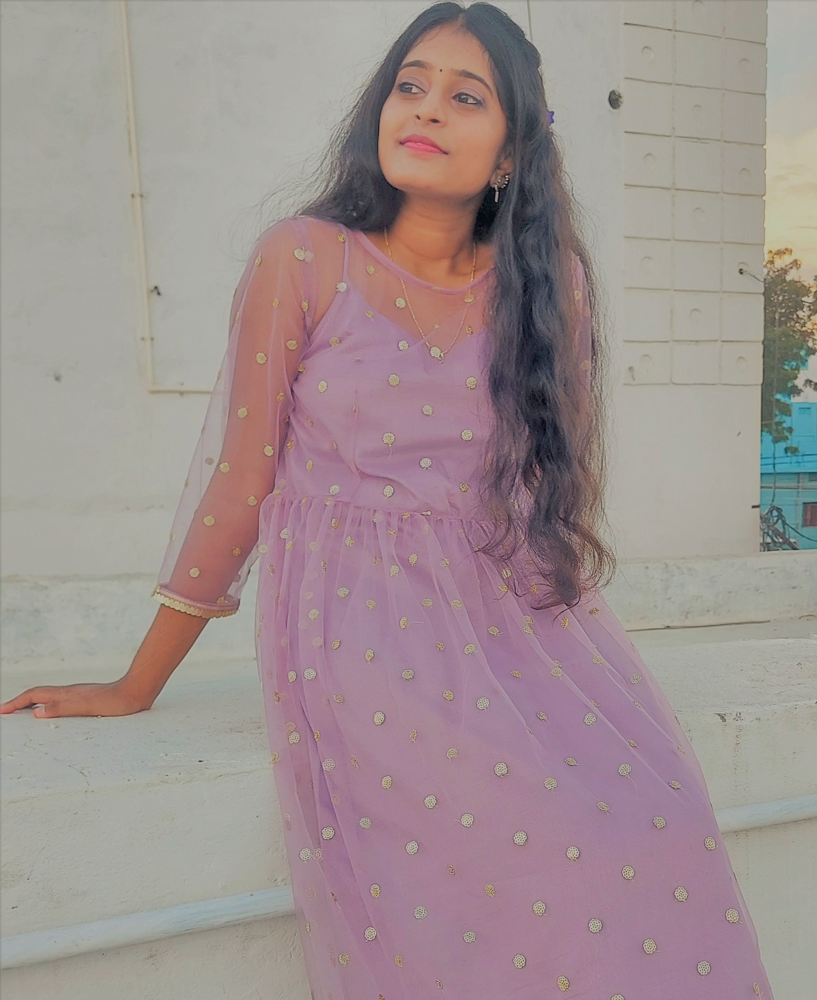

 Hey Guys!! I'm Pushpa Maithri and you can call me Maithri ( I'm not used to people calling by my first name 😅). I come from Andhra Pradesh in India. As you have come to this page... You would have already known that I'm a MSc Computing student at University of Northampton. So to tell you a bit about me I'm an outgoing person. I completed my studies till undergradutation from India and worked on Adobe Experience Management in Infosys Ltd. I love singing my heart out ( mostly in the shower) and reading supernatural fiction books especially werewolves and vampires 😄. I also watch webseries and Kdramas as well. I stan BTS (for those who don't know its a boy band from South Korea).
Its BTS💗 The reason why I love them is their music and songs cheers me up whenever I feel depressed or happy as people say "There is no language barrier when it comes to Music". I started to love myself more through them and get inspired from BTS like how they have become from a small boy band in South Korea to global superstars.
My most fav webseries is "The Originals", a supernatural fiction series where the story revolves around the vampires, werewolves and the witches. The famous quote from the webseries "Always and Forever" a vow that teaches family above all and its everything that is needed.
The second one is "Lucifer" a fictional series about The Devil and we get to see the villian's side story.
MSc Computing is the course I'm doing at UoN. To know more about the modules in this course Click Here